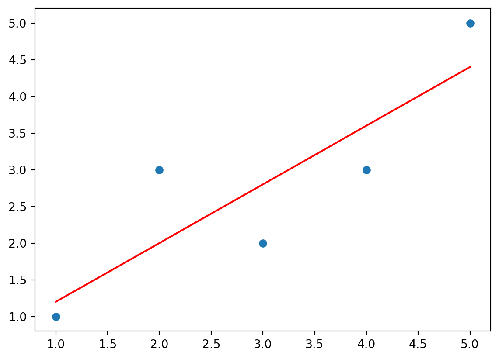
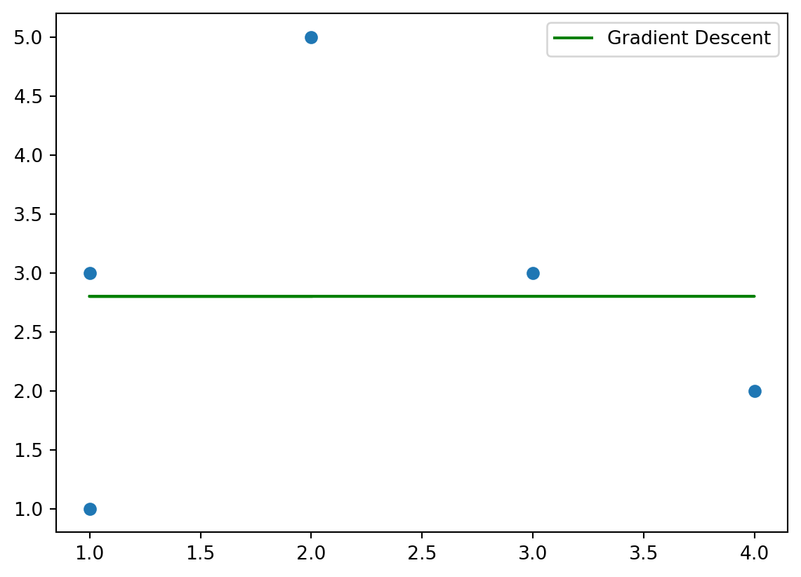
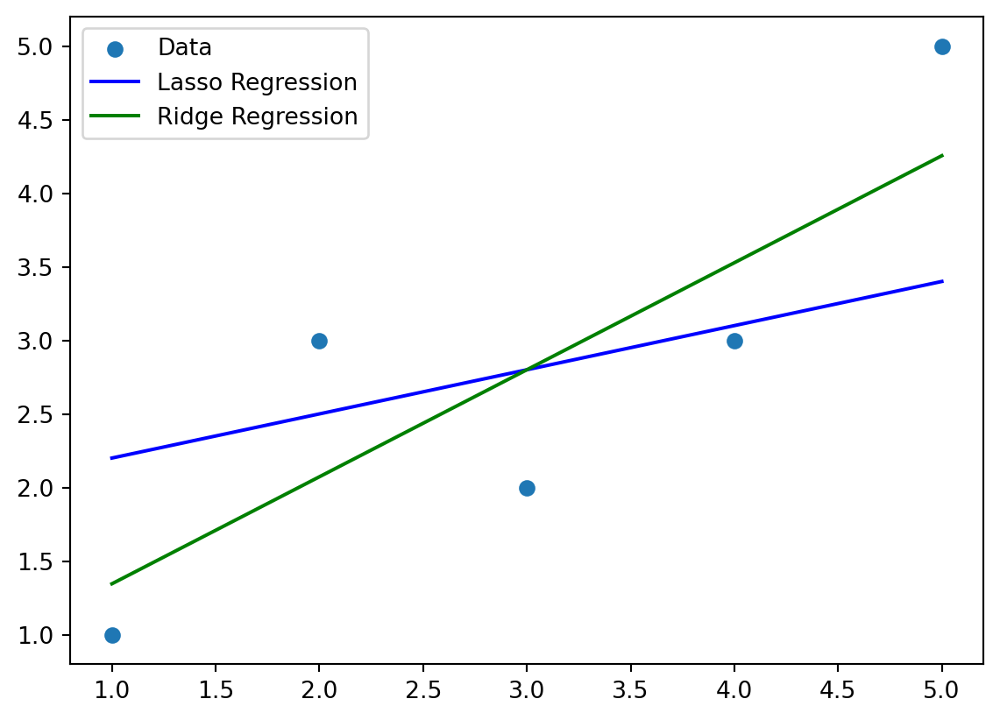
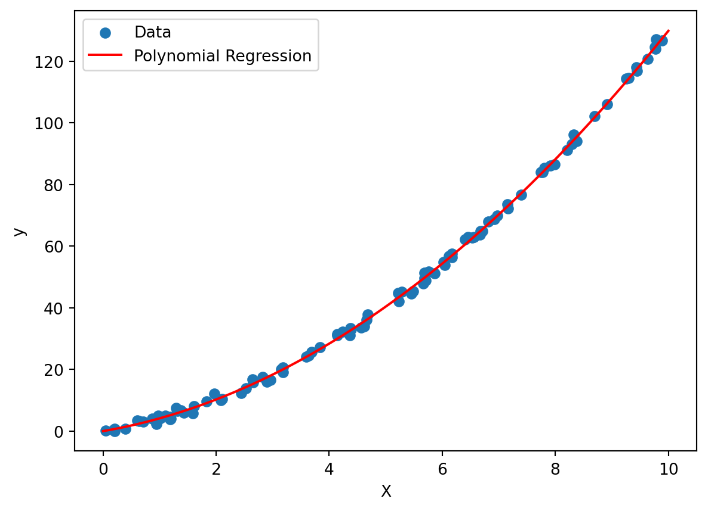
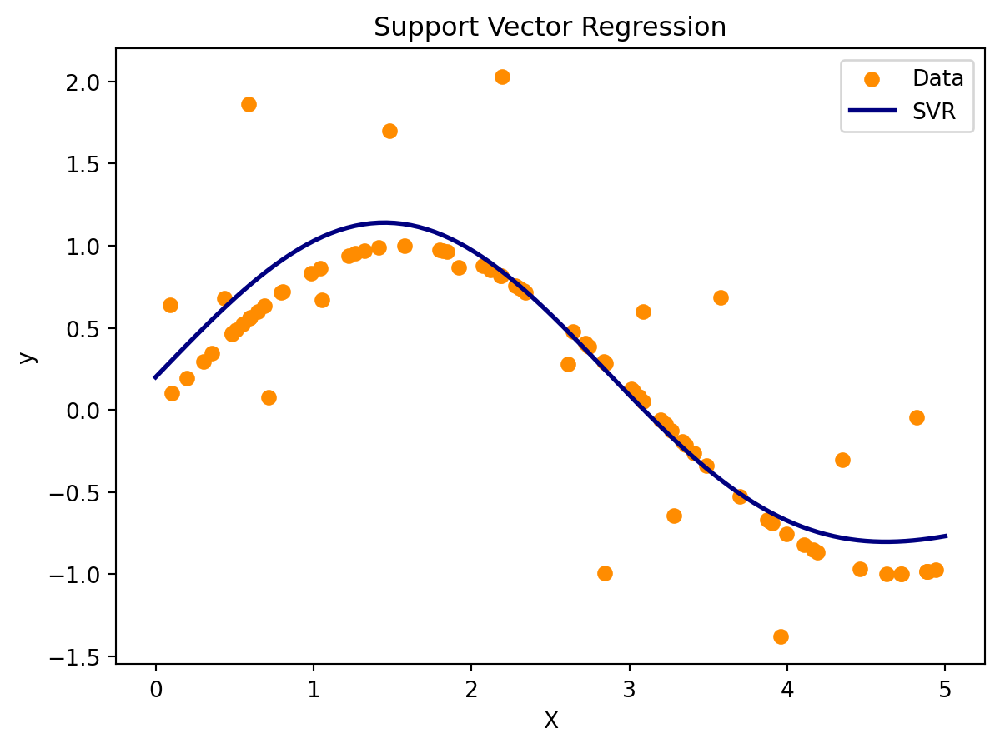
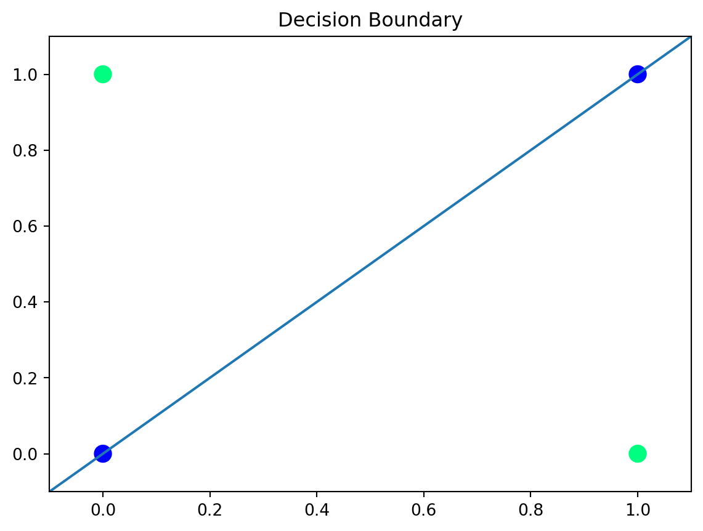

import numpy as np
import matplotlib.pyplot as plt
from sklearn.linear_model import LinearRegression
from sklearn.preprocessing import PolynomialFeatures
from sklearn.tree import DecisionTreeRegressor
from sklearn.metrics import mean_squared_error
from sklearn.linear_model import Lasso
from sklearn.linear_model import Ridge
from sklearn.svm import SVRThis post gives detailed descriptions and analysis about Linear and Nonlinear Regression.
Introduction to Linear and Nonlinear Regression
Linear and Nonlinear Regression is a special graphical analysis to analyze trends in data to create educated guesses on future data. Throughout this post, we will dive deeper into probability theory in machine learning using Python, Scikit-learn, and Tensorflow highlighting the importance of this concept. There will also be several data visualizations and executable code chunks to emphasize these points.
Important Theories and Variables
There are a some important algorithms that are important to understand. Some of them, for Linear Regression, include:
Ordinary Least Squares
Gradient Descent
Lasso and Ridge Regression
Some nonlinear regression techniques include:
Polynomial Regression
Support Vector Regression
Neural Networks
These different techniques serve several different purposes in real life such as predicting house prices, forecasting sales, estimating risks, modeling processes, approximating function, or several other purposes.
Step 0:
This step is to ensure that required libraries are installed on the machine before proceeding.
--- pip install numpy matplotlib scikit-learn tensorflow ---This step installs the required libraries to run the code below. Ensure python is installed on the machine already and the terminal has admin access when running this command.
Step 1:
When using Python, we have to import some libraries that will be utilized throughout the blog.
Some of the imports include numpy for data manipulation, matplotlib for data visualization, and sklearn libraries for statistical visualizations and formulas.
Step 2:
Illustrate the Ordinary Least Squares Linear Regression.
X = [[1], [2], [3], [4], [5]]
y = [1, 3, 2, 3, 5]
ols = LinearRegression()
ols.fit(X, y)
y_ols_pred = ols.predict(X)
plt.scatter(X, y)
plt.plot(X, y_ols_pred, color='red', label='OLS')
print("Coefficients:", ols.coef_)
print("Intercept:", ols.intercept_)Coefficients: [0.8]
Intercept: 0.3999999999999999
When analyzing the graph and the values that were outputted, there are several assumptions that can be made. Using the y = mx + b formula, since this is a linear regression formula, we can see that the intercept is 0.3999. That means that when x is 0, the y value will be 0.3999. the coefficient is 0.8, which means that is the m value, meaning that it is multiplied with whatever the x value is at the moment, then added to 0.3999. We can see there is a positive trend in the graph, meaning that we can assume that the higher the x value, the higher the y value.
Step 3:
Illustrate the Gradient Descent Linear Regression.
# Define the data
X = np.array([[1], [3], [4], [1], [2]])
y = np.array([1, 3, 2, 3, 5])
# Initialize the coefficients (slope and intercept) with random values
theta0 = np.random.rand()
theta1 = np.random.rand()
# Set the learning rate and the number of iterations
learning_rate = 0.01
num_iterations = 1000
# Perform gradient descent
for i in range(num_iterations):
# Calculate the predictions
y_pred = theta0 + theta1 * X
# Calculate the errors
error = y_pred - y
# Update the coefficients using the gradient
theta0 -= learning_rate * (1/len(X)) * np.sum(error)
theta1 -= learning_rate * (1/len(X)) * np.sum(error * X)
# Calculate predictions using the final coefficients
y_gd_pred = theta0 + theta1 * X
# Plot the original data and the regression line
plt.scatter(X, y)
plt.plot(X, y_gd_pred, color='green', label='Gradient Descent')
print("Coefficients:", theta1)
print("Intercept:", theta0)
plt.legend()
plt.show()Coefficients: 4.8789469662310274e-05
Intercept: 2.7998668074695385
When examining the graph, we can clearly see two values that are printed out, a coefficient, and an intercept. Similar to the OLS, we use a y = mx + b formula for a linear regression. The coefficient here is 0.0004, meaning that there is a very small increase. Additionally, the intercept is 2.799, meaning that when x is 0, the y value is 2.799. The green gradient descent line represents the slope, showing the relationship between the x and y values. As we can see here, there is very little correlation between the data points, but since this has to be a linear regression, it attempts to create a model as best as possible.
Step 4:
Illustrate the Lass and Ridge Regression.
# Create some sample data
X = np.array([[1], [2], [3], [4], [5]])
y = np.array([1, 3, 2, 3, 5])
# Create Lasso and Ridge regression models
lasso = Lasso(alpha=1.0) # You can adjust the alpha (regularization strength)
ridge = Ridge(alpha=1.0) # You can adjust the alpha (regularization strength)
# Fit the models to the data
lasso.fit(X, y)
ridge.fit(X, y)
# Make predictions
y_lasso_pred = lasso.predict(X)
y_ridge_pred = ridge.predict(X)
# Plot the original data, Lasso regression line, and Ridge regression line
plt.scatter(X, y, label='Data')
plt.plot(X, y_lasso_pred, color='blue', label='Lasso Regression')
plt.plot(X, y_ridge_pred, color='green', label='Ridge Regression')
plt.legend()
plt.show()
When analyzing the graph, we can see the ridge slope being much greater than the the lasso slope, meaning it has a higher coefficient, however, the lasso slope has a higher intercept. The lasso regression helps to encourage sparsity, meanwhile, the ridge focuses on stabilizing the model by reducing the coefficients. Lasso helps to deal with only the relevant data points while ridge works to maintain all features. Together, both these regression models work together to create a strong model that can help the user create an accurate assumption on future data.
___________________________________________________________________________________________________________
The three theorems shown above are all linear regressions, as shown by the straight slope lines and the consistency when using the y = mx + b formula. The following 3 algorithms are nonlinear algorithms, where they do not follow a straight formula and will rarely be a straight line.
___________________________________________________________________________________________________________
Step 5:
Illustrate Polynomial Regression.
# Generate some sample data
np.random.seed(0)
X = np.random.rand(100, 1) * 10
y = 3 * X + X**2 + np.random.randn(100, 1)
# Create polynomial features (in this case, a second-degree polynomial)
poly_features = PolynomialFeatures(degree=2)
X_poly = poly_features.fit_transform(X)
# Create a linear regression model
poly_regression = LinearRegression()
# Fit the model to the polynomial features
poly_regression.fit(X_poly, y)
# Generate predictions
X_new = np.linspace(0, 10, 100).reshape(-1, 1)
X_new_poly = poly_features.transform(X_new)
y_new = poly_regression.predict(X_new_poly)
# Plot the original data and the polynomial regression line
plt.scatter(X, y, label='Data')
plt.plot(X_new, y_new, color='red', label='Polynomial Regression')
plt.xlabel('X')
plt.ylabel('y')
plt.legend()
plt.show()
When examining the graph above, there is a clear model that demonstrates a polynomial regression. Compared to the graphs above, this regression line is curved, showing the polynomial relationship. The data points here were chosen for the most part to create a clean data set but it clearly shows the relationship and how there is no longer a y = mx + b formula, as the coefficient is now squared.
Step 6:
Illustrate Support Vector Regression.
# Generate some sample data
np.random.seed(0)
X = np.sort(5 * np.random.rand(80, 1), axis=0)
y = np.sin(X).ravel()
# Add noise to the data
y[::5] += 3 * (0.5 - np.random.rand(16))
# Create the SVR model
svr = SVR(kernel='rbf', C=100, gamma=0.1, epsilon=0.2)
# Fit the model to the data
svr.fit(X, y)
# Generate predictions
X_new = np.linspace(0, 5, 100)[:, np.newaxis]
y_svr = svr.predict(X_new)
# Plot the data points and the SVR line
plt.scatter(X, y, color='darkorange', label='Data')
plt.plot(X_new, y_svr, color='navy', lw=2, label='SVR')
# Customize the plot
plt.title('Support Vector Regression')
plt.xlabel('X')
plt.ylabel('y')
plt.legend()
plt.show()
As we see in the graph, there is a clear regression line that separates the data. Similar to the polynomial regression, the trend line is not straight, as it is more of a wave pattern. The line separates the data somewhat well and creates a strong line in terms of how close it is to the data points.
Step 7:
Illustrate Neural Networks.
# Sample data
X = np.array([[0,0],[0,1],[1,0],[1,1]])
y = np.array([0,1,1,0])
# Hyperparameters
learning_rate = 0.1
epochs = 1000
# Initialize weights randomly
np.random.seed(1)
weights = np.random.rand(2,4)
for epoch in range(epochs):
# Forward pass
outputs = X.dot(weights)
# Calculate loss
loss = np.square(outputs - y).sum()
# Backpropagation
grad = 2*X.T.dot(outputs - y)
# Take average over samples
grad = grad.mean(axis=0, keepdims=True)
# Update weights
weights -= learning_rate * grad
# Plot decision boundary
plt.scatter(X[:,0], X[:,1], c=y, s=100, cmap='winter')
ax = plt.gca()
ax.set_xlim([-0.1,1.1])
ax.set_ylim([-0.1,1.1])
# Plot decision boundary
x = np.linspace(-0.1, 1.1, 100)
y = -weights[0,0] / weights[1,0] * x
plt.plot(x, y)
plt.title("Decision Boundary")
plt.show()
print(weights)
[[ 0.13513306 0.98065962 0.57359375 -0.02161408]
[-0.13513306 0.35267372 0.75973958 0.02161408]]When making the comparisons and analyzing the outputs, we can see that the weights for input 0 isn’t as significant, 0.13, as input 1, 0.98. this means that input 1 contributes to the output more positively.
Conclusion:
As shown throughout this post, the use of different theorems in relation to linear and nonlinear regression is important in creating predictions and analyzing current data. Through different formulas, graphs, and illustrations, we are able to visualize the different data sets and make educated predictions and assumptions about the data. By using these concepts in Machine Learning, the machine has the ability to implement these formulas and make accurate guesses too. Throughout this blog post, only a few types of regressions were explored, however, there are dozens more out there that all serve their own individual purpose.